Шаги на сегодня
- Запустите Blender и создайте новый проект:
File → New → General. - Выберите макет Layout.
- Освойте навигацию во вьюпорте (вращение, приближение, перемещение).
- Настройте единицы измерения и сохраните проект как
lesson01.blend. Shift + A→Mesh → Plane— создайте основу ландшафта.- Перейдите в
Edit Mode(Tab), выделите всё (A) и выполнитеSubdivide(40–80 разрезов) для плотной сетки. - Переключитесь в
Sculpt Modeи начните формировать рельеф: холмы, впадины и широкое углубление (котлован) под будущую воду вокруг места для башни. - Создайте основу башни-ротонды: цилиндр + колонны через модификаторы Array и Curve по кругу (кривая
Bezier Circle); на скрине 1 виден уже собранный вид. - Добавьте лестницу, отредактировав куб в
Edit Mode(экструзия и подъём ступеней).
Горячие клавиши дня
Shift + A— добавить объектTab— переключение Object / Edit ModeA— выделить всёW→Subdivide— разбить плоскость- В Sculpt Mode:
F— размер кисти,Smooth— сглаживание
Иллюстрации (каждый файл на странице один раз)
Сначала только ландшафт, затем сцена с башней и скульпт котлована — без повторения одного и того же кадра.
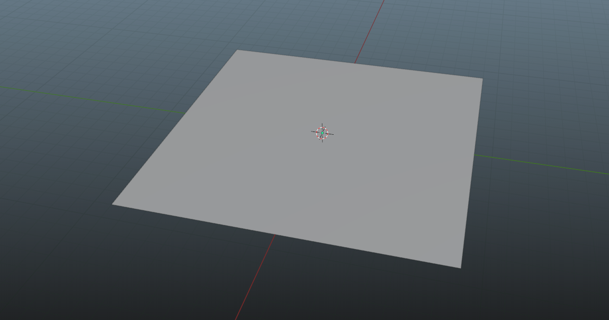

Subdivide.
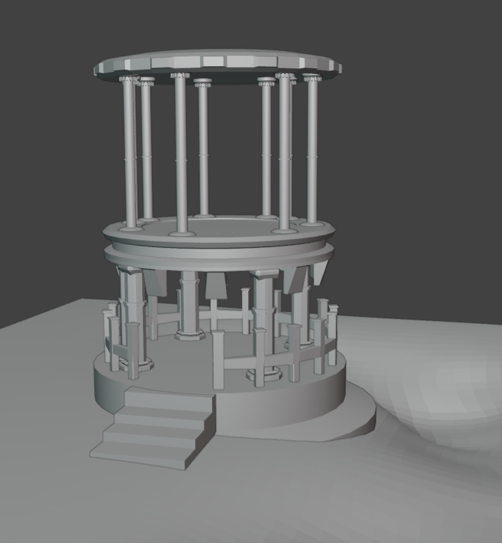
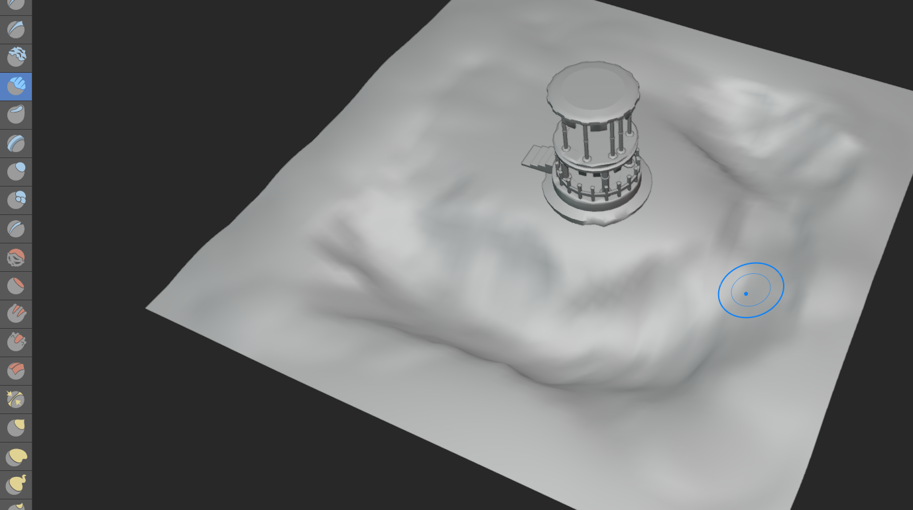
Sculpt Mode.Скрины 2, 3 и 5 (детали и интерфейс)
Продолжение вашей нумерованной серии — без повторения файлов с других страниц курса.
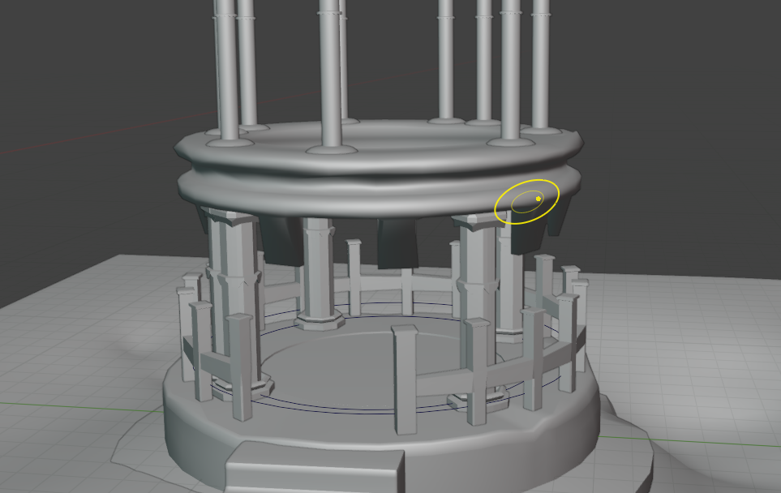
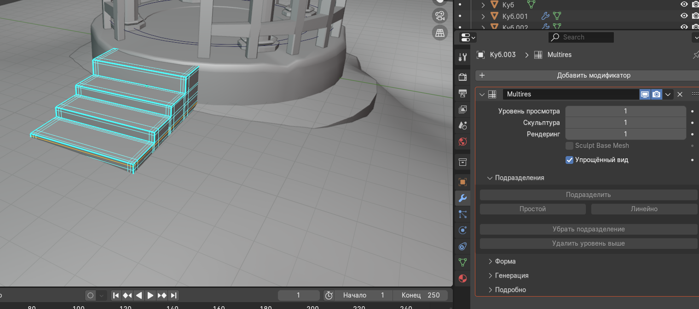
Edit Mode и модификатор Multiresolution.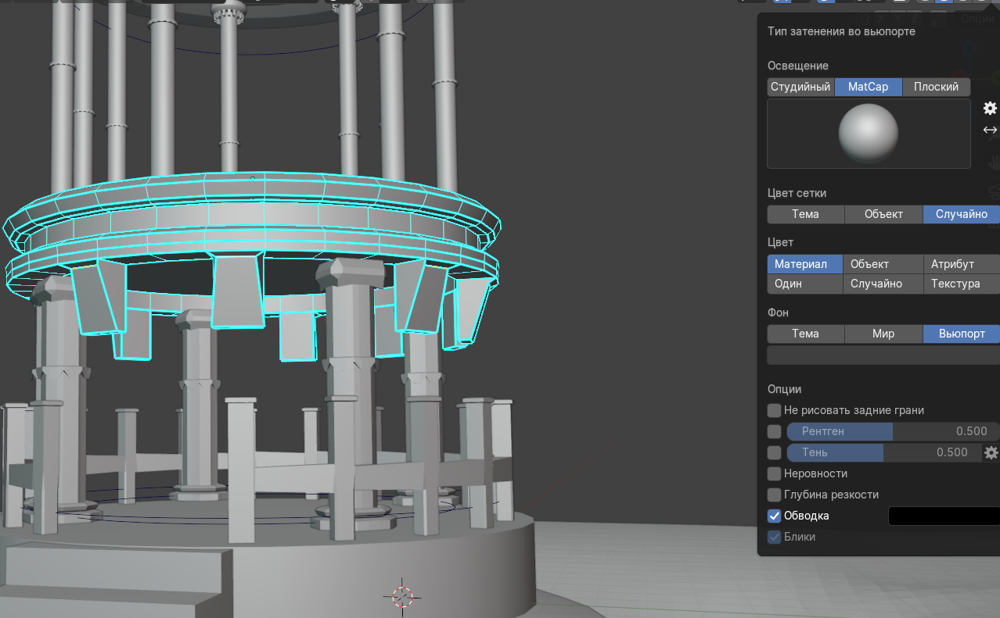
Колоннада: Array и Curve
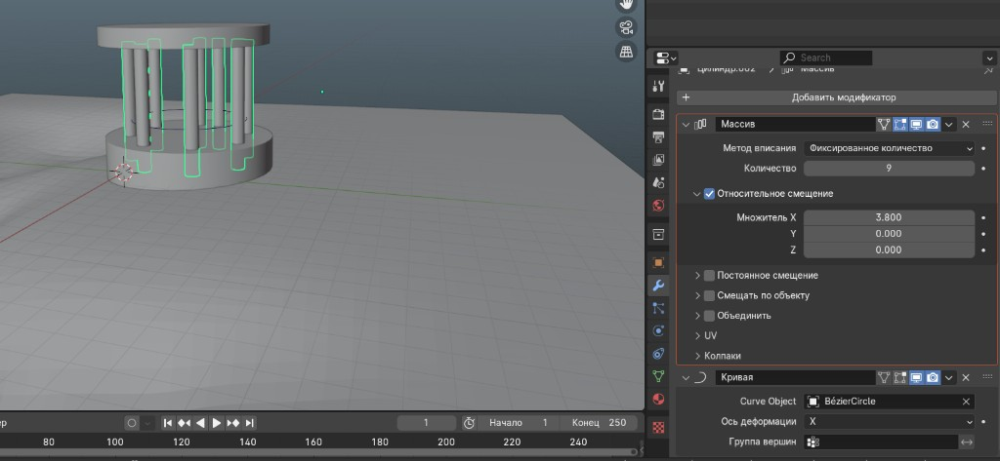
Bezier Circle.Лестница по этапам


Edit Mode: колонна, выделения, меню
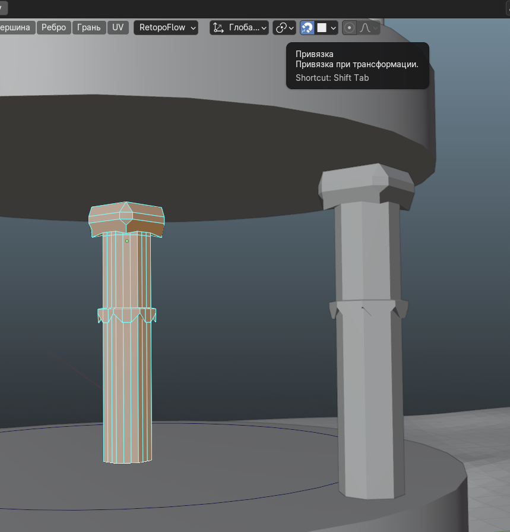
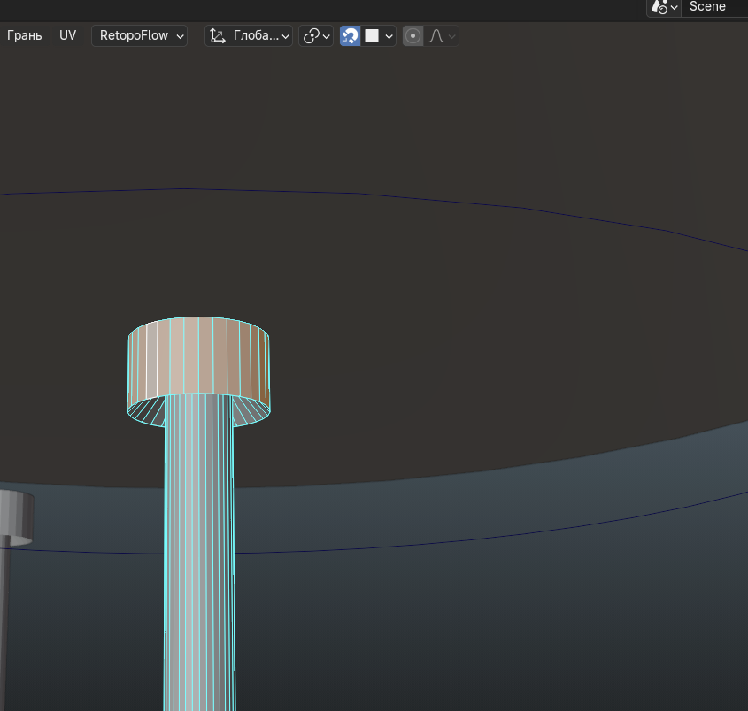
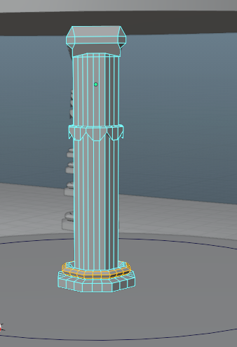
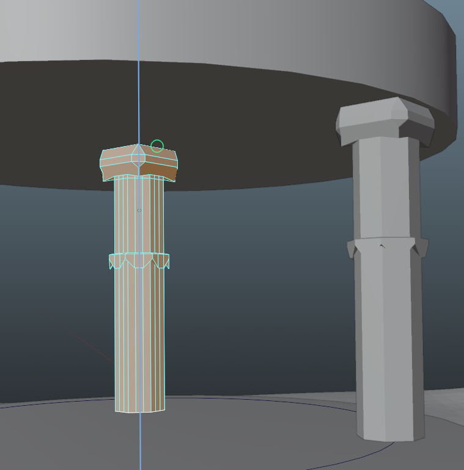
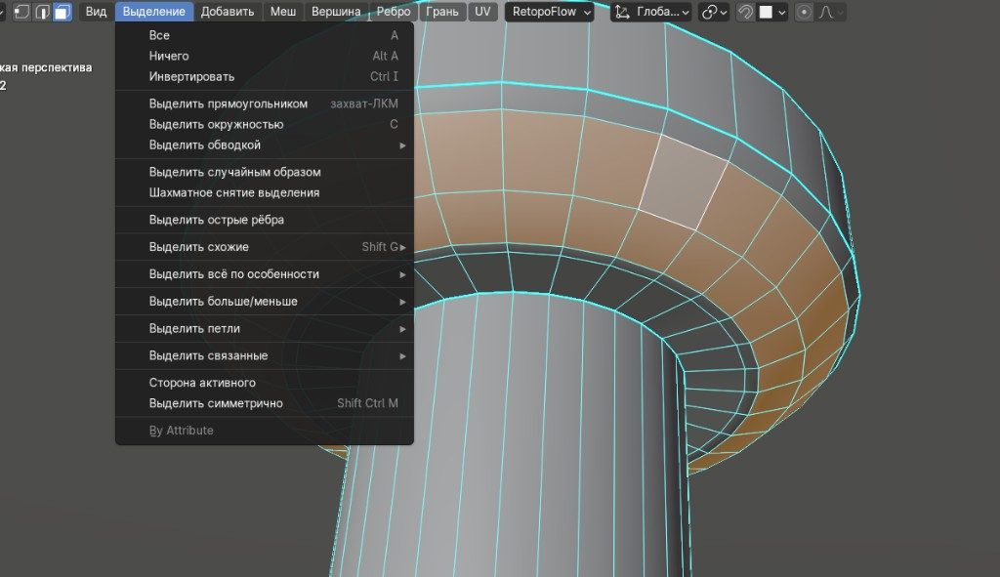
Select и выделение.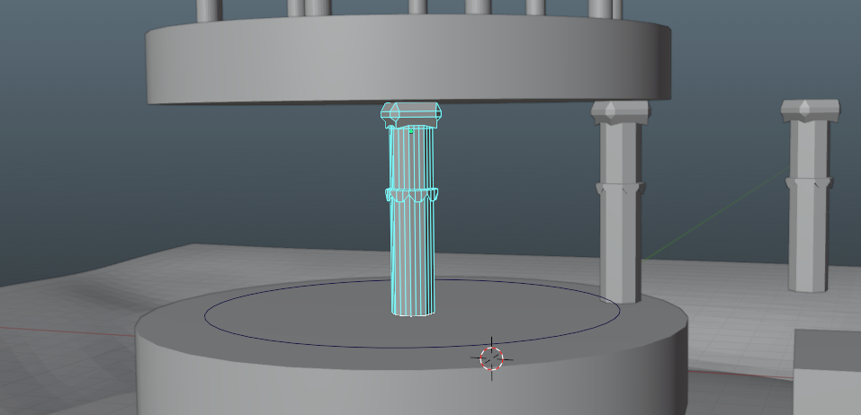
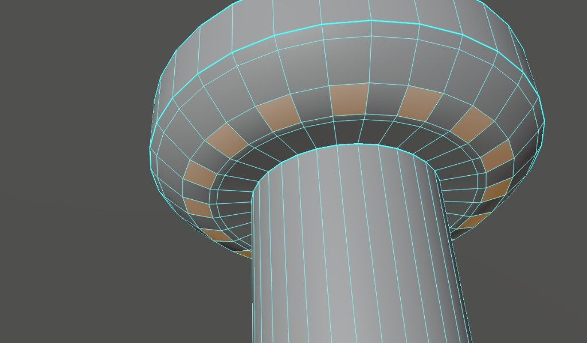
Детализация башни и панель вьюпорта
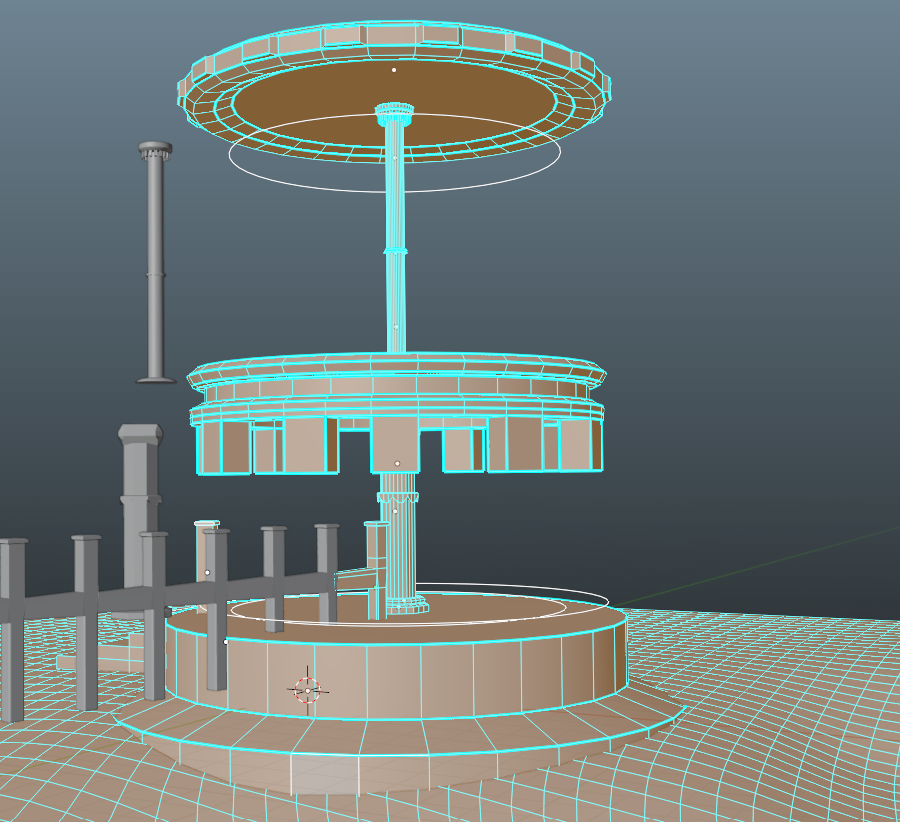
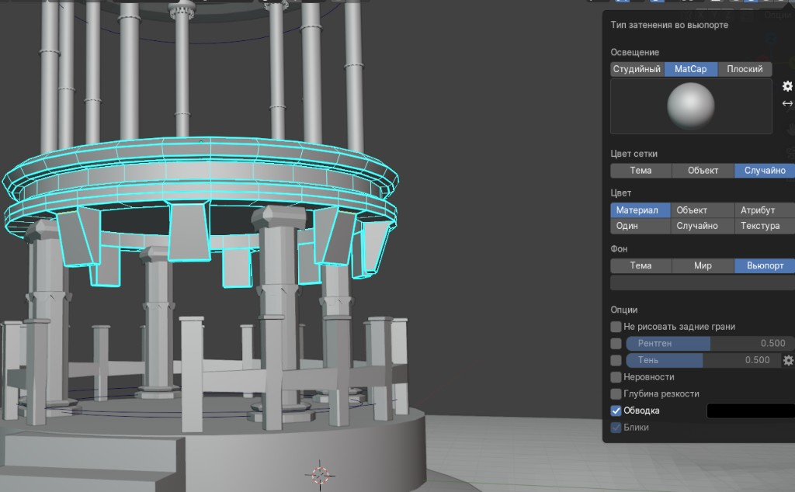
Скульпт ландшафта — дополнительный ракурс

Ещё кадры моделирования (архив)
Дополнительные сохранённые ракурсы; каждый файл здесь встречается на сайте только на этой странице.